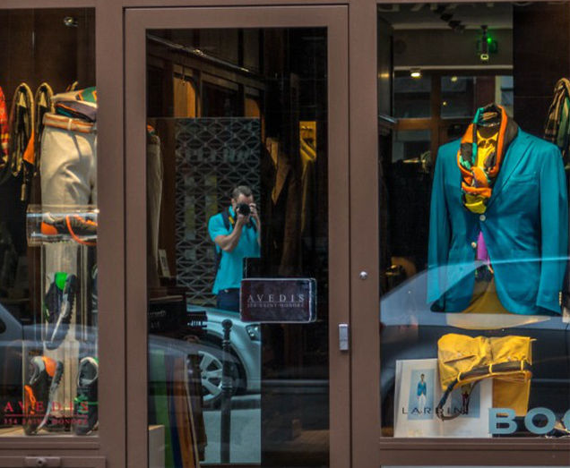

Events & More - Photographer
Based in Bucharest, Romania
Patterns by Alexandru Marinescu
ABOUT ME
Hello everyone and welcome to my personal site, where you can find some of my photography projects.
I'm a 33 year old University of Construction's graduate who was born and raised in Bucharest. I love seeing the world through my camera's lens. It gives me a different perspective on the things that surround us.
Every day that passes has at least one beautiful moment to be cherished for a long time, and unless we take a picture of it, we risk to forget it on the long run. Just like Eudora Welty said: "A good snapshot keeps a moment from running away".
So get out there, enjoy life and make some good memories along the way!
One love,
Alex
